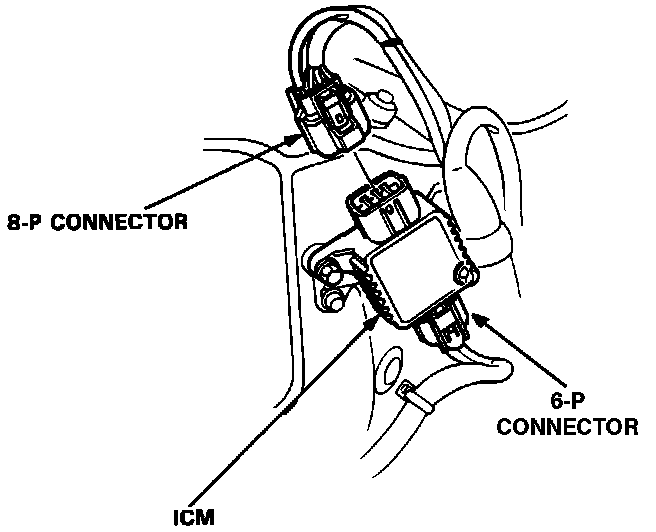

Ignition Control Module: Service and Repair
Ignition Control Module (ICM):

1. Disconnect the 8-P and 6-P connectors from the Ignition Control Module (ICM). The ICM is mounted on the left strut tower.
2. Remove the 2 mounting bolts from the unit.
3. Install new ICM and reconnect connectors.